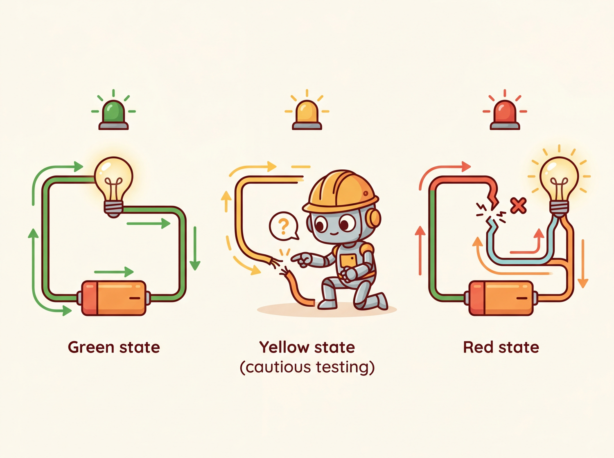

Everything works in a demo. Production is where physics, economics, and Murphy's Law all show up at once.
Pip AI Agent
Prerequisites
This section assumes you can make basic API calls and parse responses as covered in Section 10.1 and Section 10.2. Understanding of token economics from the provider comparison in Section 10.1 will help with the cost management discussion. The inference optimization concepts from Section 09.1 provide context for why latency and throughput patterns matter at the API level.
From prototype to production: Calling an LLM API in a notebook is straightforward. Running those same calls reliably at scale, across multiple providers, with cost controls, error recovery, and observability, is an engineering discipline in itself. Building on the API foundations from Section 10.1, this section covers the patterns and tools that separate production LLM systems from proof-of-concept demos. Every concept here addresses a real failure mode that teams encounter when they move from development to deployment.
1. Provider Routing with LiteLLM Intermediate
LiteLLM is an open-source library that provides a unified interface for calling over 100 LLM providers using the OpenAI SDK format. Instead of writing provider-specific code for OpenAI, Anthropic, Google, and others, you call litellm.completion() with a model string that includes a provider prefix. LiteLLM handles the translation between the OpenAI format and each provider's native API. Code Fragment 10.3.1 shows this approach in practice.
Code Fragment 10.3.1 shows the Anthropic Messages API.
# Use LiteLLM as a unified interface across multiple LLM providers
# A single completion() call works with OpenAI, Anthropic, and others
import litellm
# Same function call, different providers
# LiteLLM translates automatically
# OpenAI
response_openai = litellm.completion(
model="gpt-4o",
messages=[{"role": "user", "content": "Explain caching in one sentence."}],
max_tokens=50
)
# Anthropic (note the provider prefix)
response_anthropic = litellm.completion(
model="anthropic/claude-sonnet-4-20250514",
messages=[{"role": "user", "content": "Explain caching in one sentence."}],
max_tokens=50
)
# Google Gemini
response_gemini = litellm.completion(
model="gemini/gemini-2.5-flash",
messages=[{"role": "user", "content": "Explain caching in one sentence."}],
max_tokens=50
)
for name, resp in [("OpenAI", response_openai),
("Anthropic", response_anthropic),
("Gemini", response_gemini)]:
print(f"{name}: {resp.choices[0].message.content[:80]}...")
print(f" Cost: ${litellm.completion_cost(resp):.6f}")2. Error Recovery and Retry Logic Intermediate
LLM API calls fail. Providers experience outages, rate limits kick in, and network conditions fluctuate. A production system needs a layered defense: retry transient errors with exponential backoff, route around failing providers, and stop sending requests to a provider that is clearly down.
LiteLLM already provides production-grade failure isolation out of the box. Its Router class supports allowed_fails (number of failures before a model is put on cooldown), cooldown_time (seconds to wait before retrying a failed model), num_retries, timeout, and automatic fallbacks to alternative models. In practice, this behaves like a built-in circuit breaker: after allowed_fails consecutive failures, the router stops routing to that model for cooldown_time seconds, then tries again. For many production deployments, these built-in settings are sufficient. The from-scratch implementation below is included because understanding the circuit breaker state machine helps you reason about failure modes, tune LiteLLM's parameters correctly, and build custom resilience logic when the built-in behavior is not enough.
# LiteLLM Router with built-in failure isolation
from litellm import Router
router = Router(
model_list=[
{"model_name": "gpt-4o", "litellm_params": {"model": "gpt-4o"}},
{"model_name": "claude", "litellm_params": {"model": "anthropic/claude-sonnet-4-20250514"}},
],
allowed_fails=3, # Cooldown after 3 consecutive failures
cooldown_time=60, # Wait 60s before retrying failed model
num_retries=2, # Retry each request up to 2 times
timeout=30, # 30s timeout per request
fallbacks=[{"gpt-4o": ["claude"]}], # Fall back to Claude if GPT-4o fails
)
response = router.completion(
model="gpt-4o",
messages=[{"role": "user", "content": "Explain caching in one sentence."}]
)
print(response.choices[0].message.content)allowed_fails and cooldown_time. The router automatically stops sending requests to a failing model and falls back to alternatives.3. Circuit Breaker Pattern from Scratch Intermediate
A circuit breaker is a stability pattern borrowed from electrical engineering. Just as a physical circuit breaker cuts power to prevent a short circuit from causing a fire, a software circuit breaker stops sending requests to a failing service to prevent cascading failures. It operates in three states:
- Closed (normal): requests flow through to the provider. Failures are counted.
- Open (tripped): after consecutive failures exceed a threshold, the breaker opens. All requests are immediately routed to a fallback, giving the failing provider time to recover.
- Half-open (testing): after a recovery timeout, the breaker allows a single test request through. If it succeeds, the breaker closes; if it fails, it reopens.
Code Fragment 10.3.3 implements this three-state machine from scratch, which is instructive for understanding how LiteLLM's allowed_fails and cooldown_time work under the hood.
# Implement a circuit breaker pattern for resilient LLM calls
# Combines budget checks, caching, model fallback, and static responses
import time
from dataclasses import dataclass, field
from enum import Enum
class CircuitState(Enum):
CLOSED = "closed" # Normal operation
OPEN = "open" # Provider is down, use fallback
HALF_OPEN = "half_open" # Testing if provider recovered
@dataclass
class CircuitBreaker:
failure_threshold: int = 5 # Failures before opening
recovery_timeout: float = 60.0 # Seconds before testing recovery
failure_count: int = field(default=0, init=False)
state: CircuitState = field(default=CircuitState.CLOSED, init=False)
last_failure_time: float = field(default=0.0, init=False)
def can_execute(self) -> bool:
if self.state == CircuitState.CLOSED:
return True
if self.state == CircuitState.OPEN:
# Check if recovery timeout has elapsed
if time.time() - self.last_failure_time >= self.recovery_timeout:
self.state = CircuitState.HALF_OPEN
return True # Allow one test request
return False
if self.state == CircuitState.HALF_OPEN:
return True
return False
def record_success(self):
self.failure_count = 0
self.state = CircuitState.CLOSED
def record_failure(self):
self.failure_count += 1
self.last_failure_time = time.time()
if self.failure_count >= self.failure_threshold:
self.state = CircuitState.OPEN
print(f"Circuit OPENED after {self.failure_count} failures. "
f"Routing to fallback for {self.recovery_timeout}s.")
# Usage
breaker = CircuitBreaker(failure_threshold=3, recovery_timeout=30.0)
def call_with_circuit_breaker(messages, primary_fn, fallback_fn):
if breaker.can_execute():
try:
result = primary_fn(messages)
breaker.record_success()
return result
except Exception as e:
breaker.record_failure()
if breaker.state == CircuitState.OPEN:
return fallback_fn(messages)
raise
else:
return fallback_fn(messages)
print(f"Circuit state: {breaker.state.value}")
print(f"Ready: {breaker.can_execute()}")The circuit breaker pattern was borrowed from electrical engineering, where a physical circuit breaker prevents a short circuit from burning down your house. In software, the "house" is your application, and the "short circuit" is a failing dependency that drags every request into a timeout spiral. The name stuck because, like its electrical counterpart, the software version has three states: closed (current flows), open (current stopped), and half-open (cautiously testing whether the danger has passed).
4. Caching Strategies Intermediate
Why caching is the highest-leverage optimization for LLM systems. A single LLM API call costs 10,000 to 100,000 times more than a Redis cache lookup and takes 100 to 1,000 times longer. If even 30% of your queries are duplicates or near-duplicates (common in customer support, FAQ bots, and RAG systems), caching delivers an immediate and substantial reduction in both cost and latency. The caching layer also improves reliability: cached responses are returned instantly even when the upstream provider is experiencing an outage. This connects directly to the graceful degradation strategies discussed in Section 7 below.
LLM calls are expensive and slow compared to traditional API calls. Caching is one of the most effective optimization strategies, and there are two complementary approaches: exact caching and semantic caching.
4.1 Exact Caching
The simplest caching strategy stores responses keyed by the exact input (model + messages + parameters). If the same request comes in again, the cached response is returned instantly without making an API call. This is ideal for deterministic outputs (temperature=0) or when slight variations in output are acceptable. Code Fragment 10.3.4 shows this in practice.
Code Fragment 10.3.4 adds a caching layer.
# Build a semantic cache that hashes prompts to avoid redundant API calls
# Cache hits skip the network round-trip entirely, saving cost and latency
import hashlib
import json
import time
from functools import lru_cache
class LLMCache:
"""Simple in-memory cache for LLM responses."""
def __init__(self, max_size=1000, ttl_seconds=3600):
self.cache = {}
self.max_size = max_size
self.ttl = ttl_seconds
self.hits = 0
self.misses = 0
def _make_key(self, model, messages, **kwargs):
"""Create a deterministic cache key from request parameters."""
key_data = json.dumps({
"model": model,
"messages": messages,
"params": {k: v for k, v in sorted(kwargs.items())}
}, sort_keys=True)
return hashlib.sha256(key_data.encode()).hexdigest()
def get(self, model, messages, **kwargs):
key = self._make_key(model, messages, **kwargs)
if key in self.cache:
entry = self.cache[key]
if time.time() - entry["timestamp"] < self.ttl:
self.hits += 1
return entry["response"]
else:
del self.cache[key] # Expired
self.misses += 1
return None
def put(self, model, messages, response, **kwargs):
if len(self.cache) >= self.max_size:
# Evict oldest entry
oldest = min(self.cache, key=lambda k: self.cache[k]["timestamp"])
del self.cache[oldest]
key = self._make_key(model, messages, **kwargs)
self.cache[key] = {"response": response, "timestamp": time.time()}
@property
def hit_rate(self):
total = self.hits + self.misses
return self.hits / total if total > 0 else 0.0
cache = LLMCache(ttl_seconds=3600)
print(f"Cache initialized. Hit rate: {cache.hit_rate:.1%}")
print(f"Max size: {cache.max_size}, TTL: {cache.ttl}s")4.2 Semantic Caching
Exact caching misses when semantically identical queries use different wording. "What is the capital of France?" and "Tell me France's capital city" are the same question but produce different cache keys. Semantic caching solves this by embedding incoming queries into a vector space and searching for similar cached queries using cosine similarity. If a cached query is sufficiently similar (typically above a 0.95 cosine threshold), the cached response is returned. Code Fragment 10.3.4 shows this approach in practice.
# Build a semantic cache that hashes prompts to avoid redundant API calls
# Cache hits skip the network round-trip entirely, saving cost and latency
import numpy as np
from dataclasses import dataclass
@dataclass
class CacheEntry:
query_text: str
query_embedding: np.ndarray
response: str
timestamp: float
class SemanticCache:
"""Semantic cache using embedding similarity."""
def __init__(self, similarity_threshold=0.95, max_entries=500):
self.entries: list[CacheEntry] = []
self.threshold = similarity_threshold
self.max_entries = max_entries
def _cosine_similarity(self, a: np.ndarray, b: np.ndarray) -> float:
return float(np.dot(a, b) / (np.linalg.norm(a) * np.linalg.norm(b)))
def search(self, query_embedding: np.ndarray) -> str | None:
"""Find a cached response if a similar query exists."""
best_score = 0.0
best_response = None
for entry in self.entries:
score = self._cosine_similarity(query_embedding, entry.query_embedding)
if score > best_score:
best_score = score
best_response = entry.response
if best_score >= self.threshold:
return best_response
return None
def store(self, query_text, query_embedding, response):
import time
if len(self.entries) >= self.max_entries:
self.entries.pop(0) # Remove oldest
self.entries.append(CacheEntry(
query_text=query_text,
query_embedding=query_embedding,
response=response,
timestamp=time.time()
))
# Example: two semantically identical queries
cache = SemanticCache(similarity_threshold=0.95)
# Simulate embeddings (in production, use an embedding model)
emb1 = np.random.randn(1536)
emb1 = emb1 / np.linalg.norm(emb1)
# A very similar embedding (simulating a semantically close query)
noise = np.random.randn(1536) * 0.02
emb2 = emb1 + noise
emb2 = emb2 / np.linalg.norm(emb2)
cache.store("What is the capital of France?", emb1, "The capital of France is Paris.")
result = cache.search(emb2)
similarity = float(np.dot(emb1, emb2) / (np.linalg.norm(emb1) * np.linalg.norm(emb2)))
print(f"Similarity: {similarity:.4f}")
print(f"Cache hit: {result is not None}")
print(f"Result: {result}")The 0.95 cosine similarity threshold is a reasonable starting point, but it must be calibrated for your specific use case. A false cache hit (returning a wrong cached answer) is far worse than a cache miss. Build a validation set of 100+ query pairs, labeled as "same intent" or "different intent," and measure precision and recall at different thresholds. For safety-critical applications, use 0.97+. For FAQ-style workloads, 0.90 to 0.92 may be appropriate. See Section 12.4 for a detailed threshold analysis.
Production tools for semantic caching: For production use, consider GPTCache (an open-source library that integrates with multiple embedding models and vector stores) or Redis with its vector search capability. These handle the embedding, similarity search, TTL management, and eviction policies for you, so you do not need to implement them from scratch.
5. AI Gateways: Portkey and Helicone Intermediate
AI gateways sit between your application and LLM providers, acting as a proxy that adds routing, observability, caching, guardrails, and cost tracking. They require minimal code changes (often just changing the base URL) and provide immediate production benefits.
5.1 Portkey
Portkey is an AI gateway that supports routing, fallbacks, spend tracking, caching, and guardrails across 1600+ LLMs. It works as a proxy: you point your OpenAI client at Portkey's gateway URL and add a configuration header. Portkey handles the rest. Code Fragment 10.3.5 shows this approach in practice.
# Route requests through the Portkey AI gateway for fallback and caching
# Portkey handles provider failover and semantic response caching
from openai import OpenAI
from portkey_ai import PORTKEY_GATEWAY_URL, createHeaders
# Configure Portkey with routing and caching
client = OpenAI(
base_url=PORTKEY_GATEWAY_URL,
default_headers=createHeaders(
api_key="your-portkey-key",
config={
"strategy": {
"mode": "fallback", # Try models in order
},
"targets": [
{
"provider": "openai",
"api_key": "sk-...",
"override_params": {"model": "gpt-4o"}
},
{
"provider": "anthropic",
"api_key": "sk-ant-...",
"override_params": {"model": "claude-sonnet-4-20250514"}
}
],
"cache": {"mode": "semantic", "max_age": 3600}
}
)
)
# Your code is unchanged; Portkey handles routing and caching
response = client.chat.completions.create(
model="gpt-4o",
messages=[{"role": "user", "content": "Explain caching briefly."}]
)
# Extract the generated message from the API response
print(response.choices[0].message.content[:100])5.2 Helicone
Helicone is an open-source observability proxy focused on request logging, cost tracking, and analytics. Like Portkey, it works by changing the base URL. Helicone logs every request with latency, token counts, cost, and custom metadata, giving you a dashboard for monitoring your LLM usage. Code Fragment 10.3.6 shows this approach in practice.
# Build a semantic cache that hashes prompts to avoid redundant API calls
# Cache hits skip the network round-trip entirely, saving cost and latency
from openai import OpenAI
# Route through Helicone for observability
client = OpenAI(
base_url="https://oai.helicone.ai/v1",
default_headers={
"Helicone-Auth": "Bearer your-helicone-key",
"Helicone-Cache-Enabled": "true", # Enable response caching
"Helicone-Property-Environment": "production",
"Helicone-Property-Feature": "customer-support", # Tag for cost attribution
}
)
response = client.chat.completions.create(
model="gpt-4o",
messages=[{"role": "user", "content": "How does Helicone work?"}]
)
# Helicone dashboard now shows:
# - Request latency, token count, estimated cost
# - Cache hit/miss status
# - Custom properties for filtering and grouping
print(f"Response received. Tokens: {response.usage.total_tokens}")
print("Check Helicone dashboard for detailed analytics.")Start with a gateway early: Adding an AI gateway is one of the highest-leverage changes you can make to a production LLM system. The cost tracking alone pays for itself by identifying which features, users, or prompts consume the most tokens. Adding it later requires changing every API call site; adding it from the start requires changing only the base URL.
Caching and gateways are complementary, not alternatives. A caching layer saves money by avoiding redundant API calls. A gateway saves you from outages by providing routing, fallback, and observability. Together, they form the two pillars of production-grade API integration. The gateway handles the "what if the provider fails?" concern; the cache handles the "what if we keep asking the same question?" concern. Most production systems should have both, and the gateway's caching feature can often replace a custom caching layer entirely.
6. Token Budget Enforcement Intermediate
Without explicit controls, LLM costs can spike unpredictably, a critical consideration for cost-performance optimization at scale. Token budget enforcement tracks and limits spending at multiple granularities: per user, per organization, per feature, and per time period. The goal is to prevent runaway costs while maintaining service availability for within-budget users. Code Fragment 10.3.7 shows this approach in practice.
# Enforce per-user token budgets to prevent runaway API costs
# Track usage across configurable time windows (hourly, daily, monthly)
import time
from dataclasses import dataclass, field
from collections import defaultdict
@dataclass
class TokenBudget:
"""Track and enforce token spending limits."""
limits: dict = field(default_factory=dict) # entity -> max tokens per period
usage: dict = field(default_factory=lambda: defaultdict(int))
period_start: dict = field(default_factory=dict)
period_seconds: float = 86400 # Default: daily budget
def set_limit(self, entity: str, max_tokens: int):
self.limits[entity] = max_tokens
self.period_start[entity] = time.time()
def check_budget(self, entity: str, estimated_tokens: int) -> bool:
"""Return True if the request is within budget."""
if entity not in self.limits:
return True # No limit set
# Reset period if expired
if time.time() - self.period_start.get(entity, 0) > self.period_seconds:
self.usage[entity] = 0
self.period_start[entity] = time.time()
return self.usage[entity] + estimated_tokens <= self.limits[entity]
def record_usage(self, entity: str, tokens_used: int):
self.usage[entity] += tokens_used
def remaining(self, entity: str) -> int:
if entity not in self.limits:
return float('inf')
return max(0, self.limits[entity] - self.usage[entity])
# Example: per-user budget enforcement
budget = TokenBudget(period_seconds=86400) # Daily budgets
budget.set_limit("user:alice", max_tokens=100_000)
budget.set_limit("user:bob", max_tokens=50_000)
budget.set_limit("feature:chat", max_tokens=1_000_000)
# Check before making API call
user = "user:alice"
estimated = 500 # Estimated tokens for this request
if budget.check_budget(user, estimated):
# Make the API call
budget.record_usage(user, 480) # Actual tokens used
print(f"Request allowed. {user} remaining: {budget.remaining(user):,} tokens")
else:
print(f"Budget exceeded for {user}. Remaining: {budget.remaining(user):,} tokens")
# Simulate heavy usage
budget.record_usage("user:bob", 48_000)
print(f"user:bob remaining: {budget.remaining('user:bob'):,} tokens")
print(f"user:bob can make 500-token request: {budget.check_budget('user:bob', 500)}")check_budget method verifies a request will not exceed the limit before making the API call.Soft limits and hard limits: Implement both. A soft limit (at 80% of budget) triggers an alert so you can investigate usage patterns. A hard limit (at 100%) blocks further requests. Without a hard limit, a single runaway process (such as an infinite retry loop) can generate thousands of dollars in charges before anyone notices.
7. Graceful Degradation Intermediate

When all providers are unavailable or a user has exhausted their budget, your application should not simply crash. Graceful degradation provides a reduced but functional experience. The degradation ladder, from best to worst user experience, typically follows this pattern:
- Full LLM response: Normal operation with the primary model
- Cached response: Return a previously cached answer for a similar query
- Simpler model: Fall back to a cheaper, smaller model (e.g., GPT-4o-mini instead of GPT-4o)
- Static FAQ: Match the user's query against a set of pre-written answers using keyword or embedding similarity
- Error message: Inform the user that the service is temporarily degraded and suggest trying again later
Figure 10.3.2 visualizes this degradation ladder as a sequence of fallback levels.
8. Production Error Handling Patterns Advanced
Bringing together retries, circuit breakers, caching, and degradation into a cohesive error handling strategy requires careful orchestration. The following pattern combines these techniques into a single resilient call function.
Code Fragment 10.3.9 adds a caching layer.
# Build a semantic cache that hashes prompts to avoid redundant API calls
# Cache hits skip the network round-trip entirely, saving cost and latency
from dataclasses import dataclass
from enum import Enum
import time
import json
class FallbackLevel(Enum):
PRIMARY = "primary"
CACHE = "cache"
SIMPLE_MODEL = "simple_model"
STATIC = "static"
ERROR = "error"
@dataclass
class ResilientResponse:
content: str
fallback_level: FallbackLevel
latency_ms: float
model_used: str | None = None
def resilient_llm_call(messages, cache, circuit_breaker, budget,
user_id="default") -> ResilientResponse:
"""Production-grade LLM call with full resilience stack."""
start = time.time()
# Step 1: Check budget
if not budget.check_budget(user_id, estimated_tokens=500):
return ResilientResponse(
content="You have reached your daily usage limit. Please try again tomorrow.",
fallback_level=FallbackLevel.ERROR,
latency_ms=(time.time() - start) * 1000
)
# Step 2: Check cache
cached = cache.get("gpt-4o", messages, temperature=0)
if cached:
return ResilientResponse(
content=cached,
fallback_level=FallbackLevel.CACHE,
latency_ms=(time.time() - start) * 1000,
model_used="cache"
)
# Step 3: Try primary model (with circuit breaker)
if circuit_breaker.can_execute():
try:
response = call_primary_model(messages)
circuit_breaker.record_success()
cache.put("gpt-4o", messages, response)
budget.record_usage(user_id, 480)
return ResilientResponse(
content=response,
fallback_level=FallbackLevel.PRIMARY,
latency_ms=(time.time() - start) * 1000,
model_used="gpt-4o"
)
except Exception:
circuit_breaker.record_failure()
# Step 4: Try simpler model
try:
response = call_simple_model(messages)
return ResilientResponse(
content=response,
fallback_level=FallbackLevel.SIMPLE_MODEL,
latency_ms=(time.time() - start) * 1000,
model_used="gpt-4o-mini"
)
except Exception:
pass
# Step 5: Static fallback
return ResilientResponse(
content="I'm currently experiencing high demand. Please try again shortly.",
fallback_level=FallbackLevel.STATIC,
latency_ms=(time.time() - start) * 1000
)
# These would be real API calls in production
def call_primary_model(messages):
return "Response from GPT-4o"
def call_simple_model(messages):
return "Response from GPT-4o-mini"
print("Resilient LLM call pattern configured.")
print("Fallback order: Primary -> Cache -> Simple Model -> Static -> Error")Separate TTFT and total timeouts: When configuring timeouts for LLM calls, use two separate timers. The time-to-first-token (TTFT) timeout detects when a request is stuck in a queue and will never start generating. The total generation timeout caps the overall response time. A typical configuration is 10 seconds for TTFT and 60 seconds for total generation. If TTFT expires, fail over immediately; if the total timeout expires, return whatever partial response has been received.
Show Answer
Show Answer
Show Answer
Show Answer
Show Answer
When retrying failed API calls, use exponential backoff with jitter: delay = min(base * 2**attempt + random(), max_delay). This prevents thundering herd problems when the API recovers from an outage and all clients retry simultaneously.
Key Takeaways
- Use an abstraction layer: LiteLLM (or a similar library) lets you call 100+ providers through a single interface. Reference logical model names in your code, and configure physical deployments in the routing layer.
- Implement exponential backoff with jitter: This is the standard retry pattern for rate limits (429) and server errors (5xx). Jitter prevents the thundering herd problem.
- Circuit breakers prevent cascading failures: When a provider is down for an extended period, the circuit breaker immediately routes to a fallback rather than making every request wait through the full retry sequence.
- Cache at two levels: Exact caching handles repeated identical requests; semantic caching catches semantically similar queries with different wording. Together, they can reduce API costs by 30% to 60% for typical workloads.
- Enforce token budgets with soft and hard limits: Track spending per user, organization, and feature. Alert at 80% (soft limit) and block at 100% (hard limit) to prevent runaway costs.
- Implement graceful degradation: Build a fallback ladder (primary model, cache, simpler model, static FAQ, error message) so your application remains functional even during partial outages.
- Adopt an AI gateway early: Portkey and Helicone add routing, caching, cost tracking, and observability with minimal code changes. The investment pays for itself through cost visibility alone.
Chapter 10 has given you fluency with LLM APIs, structured output, and production engineering patterns. The next frontier is agentic tool ecosystems. The Model Context Protocol (MCP) is emerging as a standard for connecting LLMs to external tools, databases, and services in a provider-agnostic way. Beyond MCP, autonomous API orchestration (where agents compose tool calls without human intervention) is reshaping how production systems are built. Chapter 11 covers the prompt engineering techniques that control model behavior in these pipelines, and Chapter 12 shows how to combine LLMs with classical ML for cost-effective production systems.
Who: A platform engineering team at an edtech company running an AI tutoring chatbot serving 200,000 student queries per day.
Situation: Students frequently asked similar questions about the same topics (e.g., "What is photosynthesis?", "Explain photosynthesis", "How does photosynthesis work?"), but each query triggered a fresh API call because exact-match caching missed these semantic duplicates.
Problem: Monthly API costs had reached $38,000 and were growing 15% month over month as student adoption increased. The budget for the next quarter would not support projected growth.
Dilemma: They considered switching to a cheaper model (sacrificing quality), implementing exact-match caching (limited hit rate), deploying semantic caching with embeddings (higher complexity but better coverage), or using Anthropic's prompt caching for the system prompt (easy but only helps with the static portion).
Decision: They implemented a two-tier caching strategy: Anthropic prompt caching for the 2,000-token system prompt (reducing per-request cost for the static portion by 90%) and Redis-backed semantic caching using sentence-transformer embeddings with a cosine similarity threshold of 0.92.
How: They deployed a sentence-transformers model locally to compute query embeddings, stored them in Redis with the corresponding LLM responses, and added a pre-request lookup that returned cached responses for queries above the similarity threshold. Cache entries expired after 24 hours.
Result: The semantic cache achieved a 35% hit rate, and combined with prompt caching, total API costs dropped from $38,000 to $22,000 per month (a 42% reduction). Median response latency for cache hits fell from 1.2 seconds to 45 milliseconds.
Lesson: Semantic caching is most effective when user queries cluster around common topics; combining it with provider-level prompt caching creates compounding savings that scale with traffic.
Semantic caching. Rather than caching exact prompt matches, systems like GPTCache and Zilliz embed incoming prompts and search for semantically similar cached responses. Early production deployments report 40 to 60% hit rates with acceptable quality, reducing both cost and latency substantially.
Predictive rate limiting. Research teams are building ML models that predict API rate limit exhaustion before it happens, enabling proactive traffic shaping across providers. This is especially valuable for burst workloads where reactive retry logic introduces unacceptable latency spikes.
Cost-aware routing. Frameworks like Martian and RouteLLM dynamically select the cheapest model capable of handling each request, using lightweight classifiers to estimate task difficulty. Production systems report 30 to 50% cost reductions with less than 2% quality degradation on routing-compatible workloads.
Exercises
Explain how LiteLLM unifies calls across different LLM providers. What is the role of the model string prefix (e.g., 'anthropic/' or 'gemini/') in routing?
Answer Sketch
LiteLLM provides a single completion() function that accepts an OpenAI-format request. The model string prefix tells LiteLLM which provider SDK to use for translation. For example, 'anthropic/claude-sonnet-4-20250514' routes through the Anthropic SDK, translating messages, parameters, and response formats automatically. Without a prefix, it defaults to OpenAI.
Implement a retry wrapper for LLM API calls that uses exponential backoff with jitter. It should retry on 429 (rate limit) and 500+ (server error) status codes, with a maximum of 3 retries.
Answer Sketch
Use a loop with time.sleep(base_delay * (2 ** attempt) + random.uniform(0, 1)). Catch openai.RateLimitError and openai.InternalServerError. After max retries, raise the last exception. Alternatively, use the tenacity library: @retry(wait=wait_exponential(min=1, max=60), stop=stop_after_attempt(3), retry=retry_if_exception_type((RateLimitError, InternalServerError))).
Explain how Anthropic's prompt caching feature works. In what scenario does it provide the greatest cost savings, and how does it relate to the system prompt?
Answer Sketch
Anthropic caches the prefix of the prompt (system message and early conversation turns) on their servers. Subsequent requests that share the same prefix hit the cache, charging only 10% of the normal input token price for cached tokens. Greatest savings occur when a large, static system prompt is sent repeatedly with many short user queries, since the system prompt is cached and only the new user message is charged at full price.
Implement a circuit breaker for LLM API calls that opens after 5 consecutive failures, stays open for 30 seconds, then enters a half-open state that allows one test request before deciding to close or reopen.
Answer Sketch
Track state (closed/open/half_open), failure count, and last failure time. In closed state, forward requests and increment failure count on error; open the circuit at 5 failures. In open state, reject requests immediately and check if 30 seconds have elapsed. In half-open state, allow one request: on success, reset to closed; on failure, reopen. Store state in a class with call(), record_success(), and record_failure() methods.
Your team discovers that LLM API costs doubled last month. List four potential causes and the metric you would check for each.
Answer Sketch
1. Increased request volume: check requests per day trend. 2. Longer prompts (e.g., retry logic resending full conversation): check average input tokens per request. 3. Higher output token usage (verbose responses): check average output tokens per request. 4. Model upgrade (switched to a more expensive model): check model distribution in logs. Each metric should be tracked in an observability dashboard.
What Comes Next
In the next section, Section 10.4: Reasoning Models and Multimodal APIs, we explore how reasoning models and multimodal APIs change the way you work with LLM providers, including thinking tokens, reasoning budgets, and multi-modal content blocks.
BerriAI. (2024). LiteLLM: Unified API for 100+ LLM Providers.
Comprehensive documentation for LiteLLM's proxy server and SDK. Covers provider routing, fallback configuration, rate limiting, and cost tracking. The go-to resource for multi-provider LLM architectures.
Portkey. (2024). Portkey AI Gateway Documentation.
Documents Portkey's AI gateway with built-in load balancing, caching, retries, and observability. Useful comparison point to LiteLLM for teams evaluating managed gateway solutions.
Helicone. (2024). Helicone: Open-Source LLM Observability.
Open-source observability platform for LLM applications. Provides request logging, cost tracking, and latency monitoring with a single-line proxy integration. A practical choice for teams that need visibility without heavy instrumentation.
Anthropic. (2024). Prompt Caching Documentation.
Explains Anthropic's prompt caching feature that reduces costs by up to 90% for repeated system prompts. Covers cache_control breakpoints, TTL behavior, and cost calculation. Essential for high-volume applications with static system prompts.
GPTCache Project. (2024). GPTCache: Semantic Cache for LLM Queries.
Open-source semantic caching library that uses embeddings to match similar queries and return cached responses. Supports multiple embedding backends and storage adapters for Redis, SQLite, and more.
Nygard, M. T. (2018). Release It! Design and Deploy Production-Ready Software (2nd ed.). Pragmatic Bookshelf.
The classic reference on stability patterns including circuit breakers, bulkheads, and timeouts. While not LLM-specific, every pattern in this book applies directly to production LLM systems that depend on external API calls.